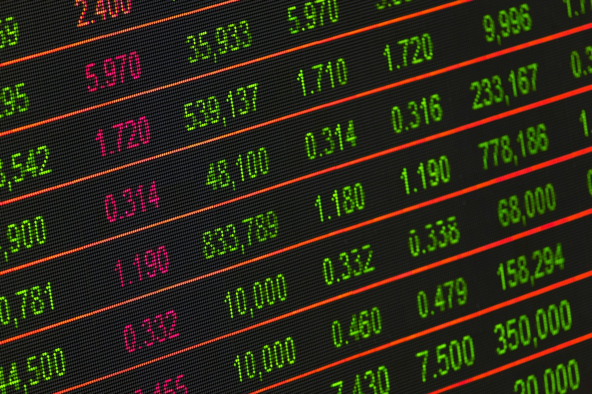
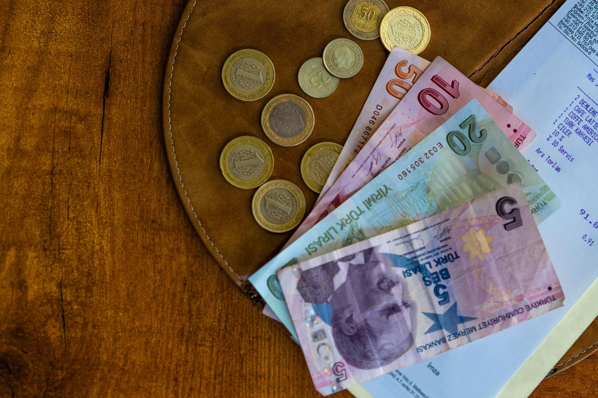

K
R
E
D
I
M
G
E
L
D
I
Katılım Endeksi, Borsa İstanbul (BIST) üzerinde, faizsiz yatırım ve katılım bankacılığı prensiplerine göre işlem gören hisse senetlerinden oluşan bir borsa endeksidir.
Daha Fazlası
Finansal analiz yapılırken kullanılan tabloların kapsamında göre statik analiz ve dinamik analiz olmak üzere iki farklı analiz türü kullanılır.
Daha FazlasıFinansal analiz işletmelerin, projelerin, bütçelerin ve finansla ilgili işlemlerin performansını ve risklerini ölçmek için finansal tabloları kullanarak yapılan bir değerlendirme sürecidir.
Daha FazlasıYeşil finans kavramını en basit haliyle, geleneksel ekonomiyi sürdürülebilir ve çevre dostu yöntemlerle dönüştürmeyi teşvik eden finansal hizmetler ve ürünler bütünü olarak tanımlayabiliriz.
Daha FazlasıEnflasyon, bir ekonominin genel mal ve hizmet fiyatlarının sürekli ve istikrarlı bir şekilde artış gösterdiği ekonomik olgudur. Bu artış, bir dönemdeki fiyat seviyelerinin önceki döneme göre yükselmesi olarak ifade edilir.
Daha Fazlası
OECD, Türkiye ekonomisinde 2025 büyüme tahminini yüzde 3,1 olarak revize etti. Avrupa İmar ve Kalkınma Bankası (EBRD) ise yatırımcı güvenindeki artış ve dengelenen büyüme itici güçleriyle 2025'te büyümenin yüzde 3'e çıkmasını öngörüyor.
Daha Fazlası